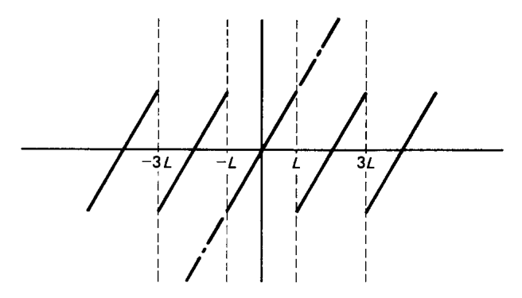
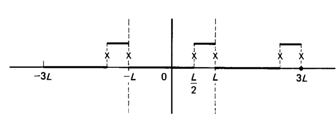
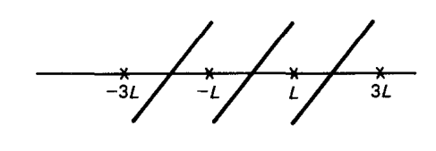

The Heat Equation, Sturm-Liouville Problems and Fourier Series
The 1D heat equation with zero Dirichlet boundary conditions, separation of variables, eigenvalue analysis across all three sign cases, superposition, Fourier series and periodic extensions, orthogonality and coefficient formulas, worked examples, symmetry, convergence, term-by-term differentiation, and Sturm-Liouville extensions for Sheet 6.
Solving a linear partial differential equation such as the 1D heat equation $u_t = u_{xx}$ on a finite rod $0 < x < L$ turns on one idea: separation of variables $u(x, t) = \phi(x)T(t)$ splits the PDE into a time ODE and a spatial eigenvalue (Sturm-Liouville) boundary-value problem. Only discrete eigenvalues $\lambda_n$ yield non-zero modes $\phi_n(x)$. Superposing all modes solves the PDE for any initial profile $f(x)$ — provided $f(x)$ can be expanded in a Fourier series whose coefficients follow cleanly from orthogonality.
This note follows the lecturer's handwritten notes (Notes09-12-Nov.pdf, pp. 1–14; lectures of 10 and 12 November) in their exact order and notation. Readings of the handwritten scan are noted explicitly. Textbook references point to R. Haberman, Elementary Applied Partial Differential Equations (BookPDE's.pdf, printed page = PDF page − 11). Sections 10 and 11 are marked extension because Sheet 6 (probls_ch6_2627.pdf) requires Sturm-Liouville theory with general boundary conditions (Neumann, mixed, Robin), integrating factors, Euler's equation, and the Rayleigh quotient, which had not yet been lectured by 12 November. See also Topic 5 and Formula Sheet - Advanced Maths.
### Notation equivalence (Lecture notes vs Haberman)
| Concept | Lecture notes (Notes09-12-Nov.pdf) | Haberman (BookPDE's.pdf) |
|---|---|---|
| 1D heat equation | $u_t = u_{xx}$ (thermal diffusivity set to $1$) | $u_t = k\,u_{xx}$ ($k$: thermal diffusivity, $[k] = \mathrm{m^2\,s^{-1}}$) |
| Separated ansatz | $u(x, t) = \phi(x)T(t)$ | $u(x, t) = \phi(x)G(t)$ |
| Separation constant | $-\lambda$ | $-\lambda$ |
| Fourier series on $[-L, L]$ | $f(x) = a_0 + \sum_{n=1}^\infty a_n\cos\frac{n\pi x}{L} + \sum_{n=1}^\infty b_n\sin\frac{n\pi x}{L}$ | Same: $a_0 + \sum a_n\cos\frac{n\pi x}{L} + \sum b_n\sin\frac{n\pi x}{L}$ (Eq. 3.2.1; $a_0 = \frac{1}{2L}\int_{-L}^L f$) |
| General SL form | $[p(x)\phi']' + [\lambda\sigma(x) + q(x)]\phi = 0$ (Sheet 6, Ex. 6.3) | $\frac{d}{dx}[p(x)\frac{d\phi}{dx}] + [q(x) + \lambda\sigma(x)]\phi = 0$ (Sec. 5.3, p. 133) |
1. The 1D Heat Equation with Zero Dirichlet Boundary Conditions
- The 1D heat equation $u_t = u_{xx}$ (or $u_t = ku_{xx}$ in SI units, with $[k] = \mathrm{m^2\,s^{-1}}$) governs the temperature $u(x, t)$ along a thin, laterally insulated rod of length $L$.
- To make the problem well-posed, we specify an initial condition $u(x, 0) = f(x)$ (temperature at $t = 0$) and boundary conditions at both ends.
- Zero Dirichlet boundary conditions $u(0, t) = 0$ and $u(L, t) = 0$ model a rod whose ends are held fixed at zero temperature (e.g. an ice bath) for all $t > 0$.
Slides: Notes09-12-Nov.pdf, p. 1; Haberman, Sec. 1.1–1.2, pp. 1–2; Haberman, Sec. 2.1, p. 28
In a thin rod occupying $0 < x < L$, heat flows from hotter to colder regions at a rate proportional to the temperature gradient (Fourier's law), and energy conservation gives the 1D heat equation (Haberman, Sec. 1.2, p. 2; Notes09-12-Nov.pdf, p. 1):
Dimensional check (SI): $[u] = \mathrm{K}$, $[u_t] = \mathrm{K\,s^{-1}}$, $[u_{xx}] = \mathrm{K\,m^{-2}}$, so the thermal diffusivity $k$ has units $[k] = \mathrm{m^2\,s^{-1}}$ (for aluminium, $k \approx 8.4\times 10^{-5}\ \mathrm{m^2\,s^{-1}}$). In the class notes we rescale time (or take $k = 1$) to work with the simplified equation (Notes09-12-Nov.pdf, p. 1):
subject to:
- Initial condition (IC): $u(x, 0) = f(x)$ for $0 < x < L$ (the starting temperature profile);
- Homogeneous Dirichlet boundary conditions (BCs): $u(0, t) = 0$ and $u(L, t) = 0$ for all $t > 0$.
Notice the physical meaning of $u_t = u_{xx}$: where the temperature profile is concave down ($u_{xx} < 0$, a local hot spot), $u_t < 0$ so the temperature drops; where it is concave up ($u_{xx} > 0$, a cold dip), $u_t > 0$ so it warms up. Heat diffusion smooths out every sharp feature.
2. Separation of Variables and the Eigenvalue Problem
- Trying a product solution $u(x, t) = \phi(x)T(t)$ separates variables: $\frac{\phi''(x)}{\phi(x)} = \frac{T'(t)}{T(t)} = -\lambda$ (a constant, because a function of $x$ alone equals a function of $t$ alone).
- The time ODE $T' = -\lambda T$ gives $T(t) = Ce^{-\lambda t}$.
- The spatial BVP $\phi'' + \lambda\phi = 0,\ \phi(0) = \phi(L) = 0$ is an eigenvalue problem: testing all three sign cases ($\lambda > 0$, $\lambda = 0$, $\lambda < 0$) shows that non-zero solutions exist only for $\lambda_n = (n\pi/L)^2$ ($n = 1, 2, 3, \dots$) with $\phi_n(x) = \sin(n\pi x/L)$.
Slides: Notes09-12-Nov.pdf, p. 1; Notes09-12-Nov.pdf, p. 2; Notes09-12-Nov.pdf, p. 3; Notes09-12-Nov.pdf, p. 4; Notes09-12-Nov.pdf, p. 5; Haberman, Sec. 2.3, pp. 31–41
Step 1: Separate variables (Notes09-12-Nov.pdf, pp. 1–2)
Why try a product $u(x, t) = \phi(x)T(t)$? Because the PDE is linear and homogeneous, and if a product works we can turn one PDE into two ODEs we already know how to solve. Differentiating $u(x, t) = \phi(x)T(t)$:
- $u_t = \phi(x)T'(t)$ (treating $x$ as constant),
- $u_{xx} = \phi''(x)T(t)$ (treating $t$ as constant).
Substituting into $u_t = u_{xx}$ gives $\phi(x)T'(t) = \phi''(x)T(t)$. Dividing both sides by $\phi(x)T(t)$ (where non-zero):
The left-hand side depends only on $x$; the right-hand side depends only on $t$. The only way a function of $x$ alone can equal a function of $t$ alone for all $x$ and $t$ is if both sides equal the same constant, which we call $-\lambda$ (the separation constant; Notes09-12-Nov.pdf, p. 2). This decouples the PDE into two ODEs:
Where did $\phi(0) = \phi(L) = 0$ come from? From the boundary conditions: $u(0, t) = \phi(0)T(t) = 0$ for all $t > 0$. If $T(t) \equiv 0$, we only get the trivial solution $u \equiv 0$, so we must have $\phi(0) = 0$, and similarly $\phi(L) = 0$.
Step 2: Solve the time ODE first (Notes09-12-Nov.pdf, p. 2)
Equation (2) is the elementary exponential decay ODE $T' = -\lambda T$, whose general solution is
(With thermal diffusivity $k$ restored, $T' = -k\lambda T \implies T(t) = Ce^{-k\lambda t}$; the exponent $k\lambda t$ is dimensionless because $[\lambda] = \mathrm{m^{-2}}$, $[k] = \mathrm{m^2\,s^{-1}}$, $[t] = \mathrm{s}$.)
Step 3: Solve the spatial eigenvalue problem — all three cases (Notes09-12-Nov.pdf, pp. 2–5)
Equation (1) is a second-order linear ODE with boundary conditions (at two different points $x = 0$ and $x = L$) rather than initial conditions at one point. The trivial function $\phi(x) \equiv 0$ always satisfies it, giving $u \equiv 0$. We look for real values of $\lambda$ — called eigenvalues — that admit non-zero solutions $\phi(x) \not\equiv 0$ — called eigenfunctions. (Complex $\lambda$ are excluded because we seek real solutions, and in fact Sturm-Liouville theory guarantees all eigenvalues are real; Notes09-12-Nov.pdf, p. 3.)
Try $\phi(x) = e^{rx}$ in $\phi'' + \lambda\phi = 0$:
Because the sign of $-\lambda$ changes the nature of the roots $r$, we must examine all three cases:
Case 1: $\lambda > 0$
Then $r = \pm i\sqrt{\lambda}$, so the complex general solution is $\phi(x) = Ae^{i\sqrt{\lambda}x} + Be^{-i\sqrt{\lambda}x}$. Expanding via Euler's formula $e^{\pm i\theta} = \cos\theta \pm i\sin\theta$ (using $\cos(-\theta) = \cos\theta$ and $\sin(-\theta) = -\sin\theta$):
Setting $c_1 = A + B$ and $c_2 = i(A - B)$ (equivalently $A = \frac{c_1 - ic_2}{2},\ B = \frac{c_1 + ic_2}{2}$) gives the real general solution (Notes09-12-Nov.pdf, p. 4):
Now impose the boundary conditions:
- $\phi(0) = c_1\cos 0 + c_2\sin 0 = c_1 = 0 \implies \phi(x) = c_2\sin(\sqrt{\lambda}x)$.
- $\phi(L) = c_2\sin(\sqrt{\lambda}L) = 0$.
For a non-trivial solution we need $c_2 \neq 0$, which forces $\sin(\sqrt{\lambda}L) = 0$. Since $\sqrt{\lambda}L > 0$, this holds if and only if
Case 2: $\lambda = 0$
The ODE becomes $\phi''(x) = 0$ (double root $r = 0$). Integrating twice gives $\phi(x) = Ax + B$. Imposing the boundary conditions:
- $\phi(0) = B = 0$,
- $\phi(L) = AL = 0 \implies A = 0$ (since $L > 0$).
Hence $\phi(x) \equiv 0$: $\lambda = 0$ is not an eigenvalue for zero Dirichlet boundary conditions.
Case 3: $\lambda < 0$
Write $-\lambda > 0$, so $r = \pm\sqrt{-\lambda}$ are two distinct real roots, and the general solution is
Imposing the boundary conditions:
- $\phi(0) = c_1 + c_2 = 0 \implies c_2 = -c_1$.
- $\phi(L) = c_1\big(e^{\sqrt{-\lambda}L} - e^{-\sqrt{-\lambda}L}\big) = 0$.
For a non-trivial solution ($c_1 \neq 0$), we need $e^{\sqrt{-\lambda}L} = e^{-\sqrt{-\lambda}L}$. Multiplying both sides by $e^{\sqrt{-\lambda}L}$ gives $e^{2\sqrt{-\lambda}L} = 1$. Taking the natural logarithm gives $2\sqrt{-\lambda}L = 0 \implies \lambda = 0$, contradicting $\lambda < 0$. Hence there are no negative eigenvalues.
Two algebraic sign slips appear in the handwritten derivation (both cancel out to the right final answer; reading of the handwritten notes):
- Page 3 (Case $\lambda > 0$): after expanding $Ae^{i\sqrt{\lambda}x} + Be^{-i\sqrt{\lambda}x}$, the notes write $(A - B)\cos(\sqrt{\lambda}x) + (A + B)i\sin(\sqrt{\lambda}x)$ instead of $(A + B)\cos(\sqrt{\lambda}x) + (A - B)i\sin(\sqrt{\lambda}x)$, since $\cos(-\theta) = +\cos\theta$ and $\sin(-\theta) = -\sin\theta$. The correct constants are $A = \frac{c_1 - ic_2}{2},\ B = \frac{c_1 + ic_2}{2}$.
- Page 4 (Case $\lambda < 0$): from $c_1 + c_2 = 0$ ($c_2 = -c_1$), the notes write $\phi(L) = C(e^{\sqrt{-\lambda}L} + e^{-\sqrt{-\lambda}L}) = 0 \implies e^{\sqrt{-\lambda}L} = -e^{-\sqrt{-\lambda}L}$ and then drop the minus sign to get $e^{-2\sqrt{-\lambda}L} = 1$. With the correct minus sign, $\phi(L) = c_1(e^{\sqrt{-\lambda}L} - e^{-\sqrt{-\lambda}L}) = 0 \implies e^{2\sqrt{-\lambda}L} = 1 \implies \lambda = 0$, a contradiction.
3. Superposition Principle and the Infinite Series Solution
- Each eigenvalue $\lambda_n = (n\pi/L)^2$ yields a product solution $u_n(x, t) = b_n\sin\left(\frac{n\pi x}{L}\right)e^{-(n\pi/L)^2 t}$ that satisfies the heat equation and both zero Dirichlet BCs.
- Because $u_t - u_{xx} = 0$ is linear and homogeneous, the superposition principle allows us to form finite sums and — formally — the infinite series $u(x, t) = \sum_{n=1}^\infty b_n\sin\left(\frac{n\pi x}{L}\right)e^{-(n\pi/L)^2 t}$.
- Setting $t = 0$ shows we can match the initial condition $u(x, 0) = f(x)$ if and only if $f(x)$ can be expanded as a Fourier sine series $f(x) = \sum_{n=1}^\infty b_n\sin\left(\frac{n\pi x}{L}\right)$.
- Limiting behaviour ($t \to \infty$): every mode decays exponentially, with higher modes ($n \ge 2$) decaying $n^2$ times faster than the fundamental mode $n = 1$, so $u(x, t) \to 0$.
Slides: Notes09-12-Nov.pdf, p. 5; Notes09-12-Nov.pdf, p. 6; Haberman, Sec. 2.2, p. 29; Haberman, Sec. 2.3, pp. 41–44
Combining $\phi_n(x)$ and $T_n(t)$ for each $n = 1, 2, 3, \dots$ produces infinitely many elementary solutions (Notes09-12-Nov.pdf, p. 5):
Each $u_n$ satisfies $u_t = u_{xx}$ and $u(0, t) = u(L, t) = 0$. However, a single mode $u_n$ can only match an initial temperature that happens to be a pure sine wave $b_n\sin(n\pi x/L)$.
Why superposition rescues us: let $L[u] = u_t - u_{xx}$. For any two solutions $u_1, u_2$ and constants $c_1, c_2$, linearity of partial derivatives gives
By induction, any finite sum $\sum_{n=1}^N u_n(x, t)$ is also a solution — and passing to an infinite series (Notes09-12-Nov.pdf, p. 6):
At $t = 0$, every exponential equals $e^0 = 1$, so matching the initial condition $u(x, 0) = f(x)$ requires
Right below the boxed formula using $b_n$, page 6 of the handwritten notes writes "for a suitable choice of $\{A_n\}_{n\ge 1}$" and then immediately returns to $b_n$ on the next line (reading of the handwritten notes). Both symbols refer to the same sine coefficients $\{b_n\}_{n\ge 1}$.
Physical interpretation and $t \to \infty$ limit: As $t$ increases, each mode decays with time constant $\tau_n = \frac{L^2}{k n^2 \pi^2}$ (or $\frac{L^2}{n^2\pi^2}$ when $k = 1$). Mode $n = 2$ decays $4$ times faster than mode $n = 1$, mode $n = 3$ decays $9$ times faster, and so on. Thus any jagged initial profile quickly smooths into a single half-sine arch $b_1\sin(\pi x/L)e^{-(\pi/L)^2 t}$, and as $t \to \infty$, $u(x, t) \to 0$ (the entire rod cools to the boundary temperature $0$).
4. General Fourier Series, Periodic Extension and the Three Questions
- Different boundary conditions (e.g. insulated ends or periodic rings) require cosines and a constant term as well as sines, leading to the general Fourier series on $[-L, L]$: $f(x) = a_0 + \sum_{n=1}^\infty a_n\cos\frac{n\pi x}{L} + \sum_{n=1}^\infty b_n\sin\frac{n\pi x}{L}$.
- Every term has period $2L$, so the Fourier series automatically represents the $2L$-periodic extension of $f(x)$ — which can have jump discontinuities at $x = \pm L$ even if $f(x)$ itself is smooth (like $f(x) = x$).
- The three central questions of Fourier analysis: (1) Does the series converge, and does it converge to $f(x)$? (2) How do we compute $a_0, a_n, b_n$? (3) When can we differentiate the series term by term?
Slides: Notes09-12-Nov.pdf, p. 7; Haberman, Sec. 3.1, pp. 75–77 (Fig. 3.1.4)
When we change the boundary conditions of the PDE (for instance to Neumann or periodic conditions), cosines and constants appear alongside sines. This motivates the general Fourier series of a function $f(x)$ defined on $[-L, L]$ (Notes09-12-Nov.pdf, p. 7; Haberman, Sec. 3.1–3.2, pp. 75–77):
Crucial observation — $2L$-periodicity: For every integer $n \ge 1$,
and identically for $\sin\left(\frac{n\pi x}{L}\right)$. Therefore, the sum of the Fourier series is always $2L$-periodic on the entire real line $\mathbb{R}$. If $f(x)$ is not $2L$-periodic (for example $f(x) = x$), we restrict $f$ to $[-L, L]$ and repeat that piece every $2L$ units to form its $2L$-periodic extension. Notice in Figure 3.1.4 that although $f(x) = \frac{3}{2}x$ is smooth everywhere, its $2L$-periodic extension has jump discontinuities at $x = \pm L, \pm 3L, \dots$ because $f(-L) \neq f(L)$.

The three fundamental questions (Lecture Nov 12; Notes09-12-Nov.pdf, pp. 7, 13)
Before trusting an infinite series as a genuine solution of a PDE, we must answer three questions:
- Convergence: Does the Fourier series converge, and if so, does it converge to $f(x)$? (Answered in Section 8.)
- Coefficients: How do we compute $a_0, a_n, b_n$ from $f(x)$? (Answered in Section 5.)
- Term-by-term differentiation: Can we differentiate the infinite series term by term (as we need to do to verify $u_t = u_{xx}$)? (Answered in Section 9.)
5. Orthogonality and Derivation of the Fourier Coefficients
- On $[-L, L]$, the functions $1$, $\cos\left(\frac{n\pi x}{L}\right)$ and $\sin\left(\frac{n\pi x}{L}\right)$ are mutually orthogonal: the integral of any product of two different basis functions is $0$, while the integral of a squared sine or cosine ($n \ge 1$) is $L$ (and $\int_{-L}^L 1^2\,dx = 2L$).
- Every orthogonality integral is proved explicitly using product-to-sum trigonometric identities and Barrow's rule $[F]_{-L}^L = F(L) - F(-L)$.
- Multiplying the Fourier series by one basis function and integrating over $[-L, L]$ kills every term except the matching one, yielding the Euler-Fourier formulas for $a_0$, $a_m$ and $b_m$.
Slides: Notes09-12-Nov.pdf, p. 8; Notes09-12-Nov.pdf, p. 9; Notes09-12-Nov.pdf, p. 10; Haberman, App. to Sec. 2.3, p. 49; Haberman, Sec. 3.2, p. 77
Step 1: Proof of the three orthogonality relations on $[-L, L]$ (Notes09-12-Nov.pdf, pp. 8–9; Sheet 6, Ex. 6.7)
Why do we prove orthogonality first? Because it acts just like the dot product of perpendicular unit vectors in $\mathbb{R}^3$: to pick out a single component of a sum, we take the "inner product" $\int_{-L}^L (\cdot)(\cdot)\,dx$ with that basis function.
1. Sine–sine orthogonality ($m, n \ge 1$)
Start from the cosine addition and subtraction formulas:
Subtracting the first from the second and dividing by $2$ gives the product-to-sum identity:
Applying this with $\alpha = \frac{n\pi x}{L}$ and $\beta = \frac{m\pi x}{L}$:
- If $m \neq n$: both $n - m \neq 0$ and $n + m \neq 0$. For any non-zero integer $k$, use the substitution $u = \frac{k\pi x}{L}$, $du = \frac{k\pi}{L}\,dx \implies dx = \frac{L}{k\pi}\,du$, and apply Barrow's rule: $$\int_{-L}^{L}\cos\left(\frac{k\pi x}{L}\right)dx = \left[\frac{L}{k\pi}\sin\left(\frac{k\pi x}{L}\right)\right]_{-L}^{L} = \frac{L}{k\pi}\big(\sin(k\pi) - \sin(-k\pi)\big) = \frac{L}{k\pi}(0 - 0) = 0.$$ Both integrals vanish, so the result is $0$.
- If $m = n \ge 1$: the second integral ($k = 2n \neq 0$) still vanishes, while in the first integral $n - m = 0$ so $\cos(0) = 1$: $$\frac{1}{2}\int_{-L}^{L} 1\,dx = \frac{1}{2}\big[x\big]_{-L}^{L} = \frac{1}{2}\big(L - (-L)\big) = \frac{1}{2}(2L) = L.$$
2. Cosine–cosine orthogonality ($m, n \ge 0$)
Adding $\cos(\alpha + \beta)$ and $\cos(\alpha - \beta)$ gives $\cos\alpha\cos\beta = \frac{1}{2}\big[\cos(\alpha - \beta) + \cos(\alpha + \beta)\big]$, so
For any non-zero integer $k$, substituting $u = \frac{k\pi x}{L}$, $du = \frac{k\pi}{L}\,dx$ gives $\int_{-L}^{L}\cos\left(\frac{k\pi x}{L}\right)dx = \left[\frac{L}{k\pi}\sin\left(\frac{k\pi x}{L}\right)\right]_{-L}^{L} = \frac{L}{k\pi}\big(\sin(k\pi) - \sin(-k\pi)\big) = 0$. When $m = n \ge 1$, the first integral has $k = 0$, giving $\frac{1}{2}\big[x\big]_{-L}^{L} = \frac{1}{2}\big(L - (-L)\big) = L$; when $m = n = 0$, both terms equal $1$, giving $\big[x\big]_{-L}^{L} = L - (-L) = 2L$:
3. Sine–cosine orthogonality (all $m \ge 0,\ n \ge 1$)
From $\sin(\alpha + \beta) = \sin\alpha\cos\beta + \cos\alpha\sin\beta$ and $\sin(\alpha - \beta) = \sin\alpha\cos\beta - \cos\alpha\sin\beta$, adding both equations gives the exact identity:
Therefore:
For any integer $k \neq 0$, substituting $u = \frac{k\pi x}{L}$, $du = \frac{k\pi}{L}\,dx$ and applying Barrow's rule:
because $\cos(-k\pi) = \cos(k\pi)$ (and if $k = 0$, $\sin(0) = 0$ identically). Thus the sine–cosine integral is $0$ for all $m, n$. (Alternatively, $\sin(\frac{n\pi x}{L})\cos(\frac{m\pi x}{L})$ is an odd function integrated over the symmetric interval $[-L, L]$, so its integral is $0$.)
On page 9, the handwritten notes write $\sin(\alpha + \beta) = 2\sin\alpha\cos\beta$ (missing the second term $+\sin(\alpha - \beta)$) and consequently write only $\frac{1}{2}\int_{-L}^L \sin\left(\frac{(n+m)\pi x}{L}\right)dx = 0$ (reading of the handwritten notes). The correct identity is $\sin(\alpha + \beta) + \sin(\alpha - \beta) = 2\sin\alpha\cos\beta$, giving $\frac{1}{2}\int_{-L}^L \left[\sin\left(\frac{(n+m)\pi x}{L}\right) + \sin\left(\frac{(n-m)\pi x}{L}\right)\right]dx = 0$. Both terms vanish individually, so the final orthogonality result ($0$) is unchanged.
Step 2: Deriving $a_0, a_m, b_m$ (Notes09-12-Nov.pdf, pp. 9–10)
Assuming the Fourier series converges to $f(x)$ on $[-L, L]$ and can be integrated term by term:
- To find $b_m$ ($m \ge 1$): multiply both sides by $\sin\left(\frac{m\pi x}{L}\right)$ and integrate from $-L$ to $L$. Every $a_0$ and $a_n$ term integrates to $0$ (sine–cosine orthogonality), and every $b_n$ term with $n \neq m$ integrates to $0$, leaving only $n = m$: $$\int_{-L}^{L} f(x)\sin\left(\frac{m\pi x}{L}\right)dx = b_m \cdot L \implies b_m = \frac{1}{L}\int_{-L}^{L} f(x)\sin\left(\frac{m\pi x}{L}\right)dx.$$
- To find $a_m$ ($m \ge 1$): multiply by $\cos\left(\frac{m\pi x}{L}\right)$ and integrate from $-L$ to $L$. Only $n = m$ survives: $$\int_{-L}^{L} f(x)\cos\left(\frac{m\pi x}{L}\right)dx = a_m \cdot L \implies a_m = \frac{1}{L}\int_{-L}^{L} f(x)\cos\left(\frac{m\pi x}{L}\right)dx.$$
- To find $a_0$: multiply by $1 = \cos(0)$ and integrate from $-L$ to $L$. Every $\cos\left(\frac{n\pi x}{L}\right)$ and $\sin\left(\frac{n\pi x}{L}\right)$ ($n \ge 1$) integrates to $0$, leaving $\int_{-L}^L a_0\,dx = 2L\,a_0$: $$a_0 = \frac{1}{2L}\int_{-L}^{L} f(x)\,dx \qquad (\text{the average value of } f \text{ on } [-L, L]!).$$
6. Worked Examples: Step Function and $f(x) = x$
- Step function ($f(x) = 1$ on $(0, L)$, $0$ on $(-L, 0]$): $a_0 = \frac{1}{2}$, $a_m = 0$, $b_m = \frac{1 - (-1)^m}{m\pi}$ (nonzero only for odd $m$: $\frac{2}{m\pi}$).
- Linear function ($f(x) = x$ on $[-L, L]$): $a_0 = 0$, $a_n = 0$ (odd function), and integration by parts gives $b_n = \frac{2L}{n\pi}(-1)^{n+1}$.
- In both examples, every integral is evaluated step by step using substitution and Barrow's rule, and the partial sums converge to the midpoint at every jump discontinuity.
Slides: Notes09-12-Nov.pdf, p. 10; Notes09-12-Nov.pdf, p. 11; Notes09-12-Nov.pdf, p. 12; Haberman, Sec. 3.2, pp. 79–80 (Fig. 3.2.2)
Example 1: The step function (Notes09-12-Nov.pdf, pp. 10–11)
Compute the Fourier series on $[-L, L]$ of
- Constant term $a_0$: Since $f = 0$ on $(-L, 0]$ and $f = 1$ on $(0, L)$, the integral splits and only $[0, L]$ contributes: $$a_0 = \frac{1}{2L}\int_{-L}^{L} f(x)\,dx = \frac{1}{2L}\int_{0}^{L} 1\,dx = \frac{1}{2L}\big[x\big]_{0}^{L} = \frac{1}{2L}(L - 0) = \frac{1}{2}.$$ (Sanity check: $f$ equals $0$ on half the interval and $1$ on the other half, so its average value must be $\frac{1}{2}$!)
- Cosine coefficients $a_m$ ($m \ge 1$): Using the substitution $u = \frac{m\pi x}{L}$, $du = \frac{m\pi}{L}\,dx \implies dx = \frac{L}{m\pi}\,du$: $$a_m = \frac{1}{L}\int_{0}^{L}\cos\left(\frac{m\pi x}{L}\right)dx = \frac{1}{L}\left[\frac{L}{m\pi}\sin\left(\frac{m\pi x}{L}\right)\right]_{0}^{L} = \frac{1}{m\pi}\big(\sin(m\pi) - \sin(0)\big) = \frac{1}{m\pi}(0 - 0) = 0.$$
- Sine coefficients $b_m$ ($m \ge 1$): With the same substitution $u = \frac{m\pi x}{L}$, antiderivative $-\frac{L}{m\pi}\cos\left(\frac{m\pi x}{L}\right)$, and Barrow's rule: $$b_m = \frac{1}{L}\int_{0}^{L}\sin\left(\frac{m\pi x}{L}\right)dx = \frac{1}{L}\left[-\frac{L}{m\pi}\cos\left(\frac{m\pi x}{L}\right)\right]_{0}^{L} = -\frac{1}{m\pi}\big(\cos(m\pi) - \cos(0)\big) = -\frac{1}{m\pi}\big((-1)^m - 1\big) = \frac{1 - (-1)^m}{m\pi}.$$ Notice that $1 - (-1)^m = 0$ when $m$ is even and $2$ when $m$ is odd, so only odd harmonics survive ($b_1 = \frac{2}{\pi},\ b_3 = \frac{2}{3\pi},\ b_5 = \frac{2}{5\pi}, \dots$).
Therefore, the Fourier series is (Notes09-12-Nov.pdf, p. 11):
(Comparison with Haberman, Sec. 3.2, pp. 79–80, Eq. 3.2.5: Haberman places the step jump at $x = L/2$ instead of $x = 0$, giving average value $a_0 = \frac{1}{4}$ and nonzero cosine coefficients $a_n$; the qualitative behaviour at jumps — converging to the midpoint $\frac{1}{2}$ — is identical, shown in both figures below.)

Example 2: $f(x) = x$ on $[-L, L]$ (Notes09-12-Nov.pdf, pp. 11–12; Sheet 6, Ex. 6.5(ii))
- Constant term $a_0$: $$a_0 = \frac{1}{2L}\int_{-L}^{L} x\,dx = \frac{1}{2L}\left[\frac{x^2}{2}\right]_{-L}^{L} = \frac{1}{4L}\big(L^2 - (-L)^2\big) = 0.$$
- Cosine coefficients $a_n$ ($n \ge 1$): Integrate by parts with $u = x \implies du = dx$, and $dv = \cos\left(\frac{n\pi x}{L}\right)dx \implies v = \frac{L}{n\pi}\sin\left(\frac{n\pi x}{L}\right)$ (via $w = \frac{n\pi x}{L},\ dw = \frac{n\pi}{L}\,dx$): $$a_n = \frac{1}{L}\int_{-L}^{L} x\cos\left(\frac{n\pi x}{L}\right)dx = \frac{1}{L}\left[\frac{L}{n\pi}x\sin\left(\frac{n\pi x}{L}\right)\right]_{-L}^{L} - \frac{1}{n\pi}\int_{-L}^{L}\sin\left(\frac{n\pi x}{L}\right)dx.$$ By Barrow's rule, the boundary term is $\frac{1}{n\pi}\big(L\sin(n\pi) - (-L)\sin(-n\pi)\big) = 0$. Integrating the remaining sine (again with $w = \frac{n\pi x}{L},\ dw = \frac{n\pi}{L}\,dx$): $$a_n = -\frac{1}{n\pi}\left[-\frac{L}{n\pi}\cos\left(\frac{n\pi x}{L}\right)\right]_{-L}^{L} = \frac{L}{(n\pi)^2}\big(\cos(n\pi) - \cos(-n\pi)\big) = 0.$$ (As Section 7 explains, $a_0 = a_n = 0$ immediately because $f(x) = x$ is an odd function!)
- Sine coefficients $b_n$ ($n \ge 1$): Integrate by parts with $u = x \implies du = dx$, and $dv = \sin\left(\frac{n\pi x}{L}\right)dx \implies v = -\frac{L}{n\pi}\cos\left(\frac{n\pi x}{L}\right)$ (via $w = \frac{n\pi x}{L},\ dw = \frac{n\pi}{L}\,dx$): $$b_n = \frac{1}{L}\int_{-L}^{L} x\sin\left(\frac{n\pi x}{L}\right)dx = \frac{1}{L}\left[-\frac{L}{n\pi}x\cos\left(\frac{n\pi x}{L}\right)\right]_{-L}^{L} + \frac{1}{n\pi}\int_{-L}^{L}\cos\left(\frac{n\pi x}{L}\right)dx.$$ The remaining cosine integral is $\frac{L}{(n\pi)^2}\left[\sin\left(\frac{n\pi x}{L}\right)\right]_{-L}^{L} = \frac{L}{(n\pi)^2}\big(\sin(n\pi) - \sin(-n\pi)\big) = 0$. Evaluating the boundary term by Barrow's rule (using $\cos(\pm n\pi) = (-1)^n$): $$b_n = -\frac{1}{n\pi}\Big(L\cos(n\pi) - (-L)\cos(-n\pi)\Big) = -\frac{1}{n\pi}\big(2L(-1)^n\big) = \frac{2L}{n\pi}(-1)^{n+1}.$$
Thus on $(-L, L)$ (Notes09-12-Nov.pdf, p. 12):
(Quick check at $L = \pi$: $b_n = \frac{2(-1)^{n+1}}{n}$, so $x \sim 2\big(\sin x - \frac{1}{2}\sin 2x + \frac{1}{3}\sin 3x - \dots\big)$.)
7. Even/Odd Symmetry and Half-Range Extensions on $[0, L]$
- If $f$ is even ($f(-x) = f(x)$), all sine coefficients vanish ($b_n = 0$) and we get a Fourier cosine series with $a_0 = \frac{1}{L}\int_0^L f\,dx,\ a_n = \frac{2}{L}\int_0^L f\cos\frac{n\pi x}{L}\,dx$.
- If $f$ is odd ($f(-x) = -f(x)$), all cosine and constant coefficients vanish ($a_0 = a_n = 0$) and we get a Fourier sine series with $b_n = \frac{2}{L}\int_0^L f\sin\frac{n\pi x}{L}\,dx$.
- When $f(x)$ is given only on the half-interval $[0, L]$, asking for its Fourier sine (or cosine) series means first extending $f$ to $[-L, L]$ as an odd (or even) function, and then extending $2L$-periodically.
Slides: Notes09-12-Nov.pdf, p. 11; Notes09-12-Nov.pdf, p. 12; Haberman, Sec. 3.3, pp. 81–98; probls_ch6_2627.pdf, p. 2
Using symmetry cuts integration work in half and explains why PDEs on $[0, L]$ produce pure sine or pure cosine series (Notes09-12-Nov.pdf, pp. 11–12; Haberman, Sec. 3.3, p. 81; Sheet 6, Ex. 6.9):
- Proof for an even function ($f(-x) = f(x)$):
- $f(x)\sin\left(\frac{n\pi x}{L}\right)$ is $\text{even} \times \text{odd} = \text{odd}$. Splitting $\int_{-L}^L = \int_{-L}^0 + \int_0^L$ and substituting $u = -x,\ du = -dx$ in the first integral gives $\int_{-L}^0 g(x)\,dx = \int_{L}^{0} g(-u)(-du) = \int_0^L (-g(u))\,du = -\int_0^L g(u)\,du$, so $b_n = 0$ for all $n \ge 1$.
- $f(x)\cos\left(\frac{n\pi x}{L}\right)$ is $\text{even} \times \text{even} = \text{even}$, so $\int_{-L}^L = 2\int_0^L$, giving $a_0 = \frac{1}{L}\int_0^L f(x)\,dx$ and $a_n = \frac{2}{L}\int_0^L f(x)\cos\left(\frac{n\pi x}{L}\right)dx$.
- Proof for an odd function ($f(-x) = -f(x)$):
- $f(x)$ and $f(x)\cos\left(\frac{n\pi x}{L}\right)$ are odd, so $a_0 = 0$ and $a_n = 0$ for all $n \ge 1$.
- $f(x)\sin\left(\frac{n\pi x}{L}\right)$ is $\text{odd} \times \text{odd} = \text{even}$, so $b_n = \frac{2}{L}\int_0^L f(x)\sin\left(\frac{n\pi x}{L}\right)dx$.
On page 11, the handwritten notes write "If $f$ is odd, ($f(x) = -f(x)$)" — accidentally omitting the minus sign inside the argument (reading of the handwritten notes). The definition of an odd function is $f(-x) = -f(x)$.
Half-range expansions on $[0, L]$ (Notes09-12-Nov.pdf, p. 12)
In the heat equation on $0 < x < L$, the initial condition $f(x)$ is only physically defined on $[0, L]$.
- With Dirichlet BCs ($u(0, t) = u(L, t) = 0$), we need a Fourier sine series, which corresponds to the odd $2L$-periodic extension of $f$ (forced to pass through $0$ at $x = 0$ and $x = \pm L$).
- With Neumann BCs ($u_x(0, t) = u_x(L, t) = 0$), we need a Fourier cosine series, which corresponds to the even $2L$-periodic extension of $f$ (zero slope at $x = 0$ and $x = \pm L$, and no jump at $x = 0$ or $x = \pm L$!).
(Tip for Sheet 6, Ex. 6.6: if $f(x)$ is already a finite trigonometric polynomial such as $2 + 3\cos(2x)$ or $8\cos^3(3x) = 2\cos(9x) + 6\cos(3x)$, rewrite it with trig identities and read off $a_0, a_n, b_n$ directly — no integrals needed, by uniqueness of Fourier coefficients!)
8. Pointwise Convergence Theorem
- A function $f$ is piecewise smooth on $[-L, L]$ if it is smooth except for at most finitely many jump discontinuities (where both one-sided limits $f(x_0)^+$ and $f(x_0)^-$ exist and are finite, but differ).
- Fourier's Convergence Theorem: if $f$ is piecewise smooth on $[-L, L]$, its Fourier series converges at every $x \in \mathbb{R}$: to the $2L$-periodic extension $\tilde f(x)$ where $\tilde f$ is continuous, and to the average $\frac{1}{2}\big(\tilde f(x_0)^+ + \tilde f(x_0)^-\big)$ at every jump discontinuity $x_0$.
- At the endpoints $x = \pm L$, the series converges to $\frac{1}{2}\big(f(-L)^+ + f(L)^-\big)$.
Slides: Notes09-12-Nov.pdf, p. 12; Notes09-12-Nov.pdf, p. 13; Haberman, Sec. 3.2, pp. 77–78
This answers Question 1 (Notes09-12-Nov.pdf, pp. 12–13; Haberman, Sec. 3.2, pp. 77–78; Sheet 6, Ex. 6.8):
A function $f$ is piecewise smooth on an interval $I$ if $f$ is smooth on $I$ except for a finite number of jump discontinuities (points $x_0 \in I$ where both one-sided limits $\lim_{x\to x_0^+} f(x) = f(x_0)^+$ and $\lim_{x\to x_0^-} f(x) = f(x_0)^-$ exist as finite numbers, but do not coincide). (The notes remark "smooth means $C^\infty$"; Haberman, p. 76 notes that piecewise continuous $f$ and $f'$ already suffice.)
If $f(x)$ is piecewise smooth on $[-L, L]$, then the Fourier series of $f$ converges at every point $x$:
- to $f(x)$ (or its $2L$-periodic extension $\tilde f(x)$) wherever $\tilde f$ is continuous;
- to the midpoint $\dfrac{1}{2}\big(\tilde f(x_0)^+ + \tilde f(x_0)^-\big)$ wherever $\tilde f$ has a jump discontinuity at $x_0$.
Applying the theorem to our two examples:
- For the step function of Section 6: at $x = 0$, $f(0)^- = 0$ and $f(0)^+ = 1$, so the series converges to $\frac{0 + 1}{2} = \frac{1}{2}$ (indeed, every $\sin(0) = 0$, leaving $a_0 = \frac{1}{2}$!). At $x = \pm L$, $\tilde f(\pm L)^- = 1$ and $\tilde f(\pm L)^+ = 0$, so it also converges to $\frac{1}{2}$.
- For $f(x) = x$ on $[-L, L]$: at $x = L$, $\tilde f(L)^- = L$ and $\tilde f(L)^+ = -L$, so the series converges to $\frac{L + (-L)}{2} = 0$ (indeed, every $\sin(n\pi) = 0$!).
9. Term-by-Term Differentiation and Counterexample
- You cannot blindly differentiate an infinite Fourier series term by term — jumps in the $2L$-periodic extension destroy convergence of the differentiated series.
- Counterexample: differentiating $x = 2\sum_{n=1}^\infty \frac{L}{n\pi}(-1)^{n+1}\sin\left(\frac{n\pi x}{L}\right)$ on $0 \le x < L$ gives $1 \stackrel{?}{=} 2\sum_{n=1}^\infty (-1)^{n+1}\cos\left(\frac{n\pi x}{L}\right)$, which diverges everywhere because its $n$-th term does not tend to $0$.
- Theorem: a Fourier series can be differentiated term by term if its $2L$-periodic extension is continuous everywhere ($f$ continuous on $[-L, L]$ with $f(-L) = f(L)$) and $f'$ is piecewise smooth.
- For the heat equation at any $t > 0$, the exponential factor $e^{-(n\pi/L)^2 t}$ decays so fast that $u(x, t)$ is infinitely differentiable term by term even if $f(x)$ has jumps!
Slides: Notes09-12-Nov.pdf, p. 13; Notes09-12-Nov.pdf, p. 14; Haberman, Sec. 3.4, pp. 99–100 (Fig. 3.4.1)
This answers Question 3 (Notes09-12-Nov.pdf, pp. 13–14; Haberman, Sec. 3.4, pp. 99–100). To prove that $u(x, t) = \sum_{n=1}^\infty b_n\sin\left(\frac{n\pi x}{L}\right)e^{-(n\pi/L)^2 t}$ truly solves $u_t = u_{xx}$, we must differentiate the infinite sum in $t$ and twice in $x$. Can we always move $\frac{d}{dx}$ inside $\sum_{n=1}^\infty$? No!
The counterexample from the notes (Notes09-12-Nov.pdf, pp. 13–14; Haberman, p. 100)
From Section 6, the Fourier sine series of $f(x) = x$ on $0 \le x < L$ is
If we differentiate the left-hand side with respect to $x$, we get $1$. If we formally differentiate the right-hand side term by term (applying the chain rule $\frac{d}{dx}\sin\left(\frac{n\pi x}{L}\right) = \frac{n\pi}{L}\cos\left(\frac{n\pi x}{L}\right)$), the $\frac{L}{n\pi}$ cancels completely and we obtain
This is false! In fact, the series on the right does not even converge for any $x$ (by the $n$-th term test, $(-1)^{n+1}\cos(n\pi x/L) \not\to 0$). Why did it fail? Because the Fourier sine series of $x$ has jump discontinuities at $x = \pm L, \pm 3L, \dots$ (Figure 3.4.1).

If $f$ is continuous on $[-L, L]$, satisfies the periodic endpoint condition $f(-L) = f(L)$ (so its $2L$-periodic extension has no jumps anywhere), and $f'$ is piecewise smooth on $(-L, L)$, then the Fourier series of $f$ can be differentiated term by term, and the resulting series converges to $f'(x)$ wherever $f'$ is continuous (and to $\frac{1}{2}(f'(x_0)^+ + f'(x_0)^-)$ at corners).
Page 14 of the notes states: "If $f'$ is piecewise smooth on $(-L, L)$ and $f(-L)^- = f(L)^+$, then the Fourier series can be differentiated term-by-term" (reading of the handwritten notes). Remember two essential details from Haberman, Sec. 3.4, p. 100: (1) $f$ must also be continuous inside $(-L, L)$ (no interior jumps), and (2) for the restriction on $[-L, L]$, matching the ends of the periodic extension means $f(-L)^+ = f(L)^-$.
Why the heat equation still works for $t > 0$: For any fixed $t > 0$, the exponential $e^{-(n\pi/L)^2 t}$ shrinks faster than any power $n^k$ can grow, so every $x$- and $t$-derivative of $\sum b_n\sin(\frac{n\pi x}{L})e^{-(n\pi/L)^2 t}$ converges uniformly — heat diffusion instantaneously makes $u(x, t)$ smooth for all $t > 0$!
10. Extension: Boundary Conditions for Eigenvalue Problems (Sheet 6)
- Extension for Sheet 6 (Ex. 6.1 (i)–(iv)): besides Dirichlet ($\phi(0) = \phi(L) = 0$), Sheet 6 asks for mixed, Neumann, and Robin boundary conditions on $\phi'' + \lambda\phi = 0$ on $(0, L)$.
- Always test all three cases ($\lambda > 0$, $\lambda = 0$, $\lambda < 0$): $\lambda = 0$ is an eigenvalue only for pure Neumann BCs ($\phi'(0) = \phi'(L) = 0$, eigenfunction $\phi_0(x) = 1$).
- For Robin BCs ($\phi(0) = 0,\ \phi'(L) + h\phi(L) = 0$ with $h > 0$), positive eigenvalues satisfy the transcendental equation $\tan(\sqrt{\lambda}L) = -\frac{\sqrt{\lambda}}{h}$, solved graphically.
Slides: Haberman, Sec. 2.4, pp. 51–60; Haberman, Sec. 5.8, pp. 167–172; probls_ch6_2627.pdf, p. 1
All four cases below solve $\phi''(x) + \lambda\phi(x) = 0$ on $0 < x < L$ (Sheet 6 sets $L = 1$). The derivations follow Haberman, Sec. 2.4 (pp. 51–60) and Sec. 5.8 (pp. 167–172).
| Boundary conditions on $(0, L)$ | Physical meaning (heat) | $\lambda < 0$ | $\lambda = 0$ | $\lambda > 0$: eigenvalues $\lambda_n$ ($n \ge 1$) | Eigenfunctions $\phi_n(x)$ |
|---|---|---|---|---|---|
| (i) Dirichlet: $\phi(0) = \phi(L) = 0$ | Fixed $u = 0$ at both ends | None | No | $\left(\dfrac{n\pi}{L}\right)^2$ | $\sin\left(\dfrac{n\pi x}{L}\right)$ |
| (ii) Mixed: $\phi(0) = 0,\ \phi'(L) = 0$ | Fixed at $0$, insulated at $L$ | None | No | $\left(\dfrac{(2n-1)\pi}{2L}\right)^2$ | $\sin\left(\dfrac{(2n-1)\pi x}{2L}\right)$ |
| (iii) Neumann: $\phi'(0) = \phi'(L) = 0$ | Both ends insulated | None | Yes! $\phi_0 = 1$ | $\left(\dfrac{n\pi}{L}\right)^2$ | $\cos\left(\dfrac{n\pi x}{L}\right)$ (plus $\phi_0 = 1$) |
| (iv) Robin ($h > 0$): $\phi(0) = 0,\ \phi'(L) + h\phi(L) = 0$ | Newton cooling at $x = L$ | None ($h > 0$) | No | Roots of $\tan(\sqrt{\lambda}L) = -\dfrac{\sqrt{\lambda}}{h}$ | $\sin(\sqrt{\lambda_n}x)$ |
Step-by-step check of the three new cases
- Mixed ($\phi(0) = 0,\ \phi'(L) = 0$):
- $\lambda > 0$: $\phi = c_1\cos\sqrt{\lambda}x + c_2\sin\sqrt{\lambda}x$; $\phi(0) = 0 \implies c_1 = 0$; $\phi'(L) = c_2\sqrt{\lambda}\cos(\sqrt{\lambda}L) = 0 \implies \sqrt{\lambda}L = \frac{(2n-1)\pi}{2}$ ($n \ge 1$).
- $\lambda = 0$: $\phi = Ax + B$; $\phi(0) = B = 0$, $\phi'(L) = A = 0 \implies \phi \equiv 0$.
- $\lambda < 0$: $\phi = c_1\cosh\sqrt{-\lambda}x + c_2\sinh\sqrt{-\lambda}x$; $\phi(0) = c_1 = 0$, $\phi'(L) = c_2\sqrt{-\lambda}\cosh(\sqrt{-\lambda}L) = 0 \implies c_2 = 0$ (since $\cosh > 0$).
- Neumann ($\phi'(0) = 0,\ \phi'(L) = 0$):
- $\lambda > 0$: $\phi'(x) = -c_1\sqrt{\lambda}\sin\sqrt{\lambda}x + c_2\sqrt{\lambda}\cos\sqrt{\lambda}x$; $\phi'(0) = 0 \implies c_2 = 0$; $\phi'(L) = -c_1\sqrt{\lambda}\sin(\sqrt{\lambda}L) = 0 \implies \sqrt{\lambda}L = n\pi$ ($n \ge 1$), $\phi_n = \cos(n\pi x/L)$.
- $\lambda = 0$: $\phi = Ax + B \implies \phi'(x) = A$. Both $\phi'(0) = 0$ and $\phi'(L) = 0$ give $A = 0$, leaving $B$ arbitrary! Thus $\lambda_0 = 0$ is an eigenvalue with constant eigenfunction $\phi_0(x) = 1$. (Physically, an insulated rod can sit at any uniform steady temperature!)
- $\lambda < 0$: $\phi'(0) = 0 \implies c_2 = 0$; $\phi'(L) = c_1\sqrt{-\lambda}\sinh(\sqrt{-\lambda}L) = 0 \implies c_1 = 0$ (since $\sinh u = 0 \iff u = 0$).
- Robin ($\phi(0) = 0,\ \phi'(L) + h\phi(L) = 0$ with $h > 0$; Haberman, Sec. 5.8, p. 169):
- $\lambda > 0$: $\phi(0) = 0 \implies \phi(x) = c_2\sin(\sqrt{\lambda}x)$, so $\phi'(x) = c_2\sqrt{\lambda}\cos(\sqrt{\lambda}x)$. Imposing $\phi'(L) + h\phi(L) = 0$ with $c_2 \neq 0$: $$\sqrt{\lambda}\cos(\sqrt{\lambda}L) + h\sin(\sqrt{\lambda}L) = 0 \implies \tan(\sqrt{\lambda}L) = -\frac{\sqrt{\lambda}}{h},$$ where dividing by $\cos(\sqrt{\lambda}L)$ is valid because $\cos(\sqrt{\lambda}L) = 0$ would force $\sin(\sqrt{\lambda}L) = 0$, impossible. (Dimensionally, $[h] = \mathrm{m^{-1}}$ matches $[\phi'/\phi]$, so $z = \sqrt{\lambda}L$, $\sqrt{\lambda}/h$, and $hL$ are all dimensionless.) Setting $z = \sqrt{\lambda}L > 0$, we intersect $y = \tan z$ with the negatively sloped line $y = -z/(hL)$ (Figure below): there are infinitely many positive roots $z_n \in \big((2n-1)\frac{\pi}{2},\ n\pi\big)$, with $\lambda_n = (z_n/L)^2$.
- $\lambda = 0$: $\phi = Ax + B$, $\phi(0) = B = 0$, $\phi'(L) + h\phi(L) = A(1 + hL) = 0 \implies A = 0$ (since $h > 0 \implies 1 + hL > 0$).
- $\lambda < 0$: $\phi = c_2\sinh(\sqrt{-\lambda}x)$, so $\sqrt{-\lambda}\cosh(\sqrt{-\lambda}L) + h\sinh(\sqrt{-\lambda}L) = 0 \implies \tanh(\sqrt{-\lambda}L) = -\frac{\sqrt{-\lambda}}{h}$. For $h > 0$, the left side is positive and the right side is negative: no negative eigenvalues.
11. Extension: General Sturm-Liouville Theory, Integrating Factor, Euler Equation and Rayleigh Quotient (Sheet 6)
- Extension for Sheet 6 (Ex. 6.2, 6.3, 6.4): a regular Sturm-Liouville (SL) problem has the self-adjoint form $\big[p(x)\phi'(x)\big]' + \big[\lambda\sigma(x) + q(x)\big]\phi(x) = 0$ on $[a, b]$ with $p(x) > 0,\ \sigma(x) > 0$.
- Integrating factor (Ex. 6.3): multiplying $\phi'' + \alpha(x)\phi' + [\lambda\beta(x) + \gamma(x)]\phi = 0$ by $\mu(x) = \exp\big(\int \alpha(x)\,dx\big)$ converts it into SL form with $p = \mu,\ \sigma = \mu\beta,\ q = \mu\gamma$.
- Euler equation (Ex. 6.4): $x^2\phi'' + x\phi' + \lambda\phi = 0$ on $[1, 2]$ becomes $(x\phi')' + \frac{\lambda}{x}\phi = 0$ upon multiplying by $\frac{1}{x}$; substituting $t = \ln x$ reduces it to $\frac{d^2\phi}{dt^2} + \lambda\phi = 0$ on $[0, \ln 2]$.
- Rayleigh quotient (Ex. 6.4): multiplying the SL equation by $\phi$ and integrating by parts gives $\lambda = \frac{-[p\phi\phi']_a^b + \int_a^b [p(\phi')^2 - q\phi^2]\,dx}{\int_a^b \sigma\phi^2\,dx}$, which immediately proves $\lambda \ge 0$ when $q \le 0$ and the boundary term is $\ge 0$.
Slides: Haberman, Sec. 5.3, pp. 133–141; Haberman, Sec. 5.6, pp. 159–162; probls_ch6_2627.pdf, p. 1
Everything in this section comes from Haberman, Sec. 5.3 (pp. 133–141) and Sec. 5.6 (pp. 159–162) to give full coverage of Sheet 6 and the November 24 lectures.
1. Regular Sturm-Liouville form and key theorems (Haberman, Sec. 5.3, pp. 133–135)
A regular Sturm-Liouville eigenvalue problem on a finite interval $a < x < b$ is
with separated homogeneous boundary conditions $\beta_1\phi(a) + \beta_2\phi'(a) = 0$ and $\beta_3\phi(b) + \beta_4\phi'(b) = 0$. Its five fundamental properties generalise everything we proved for $\phi'' + \lambda\phi = 0$:
- All eigenvalues $\lambda_n$ are real.
- There are infinitely many eigenvalues $\lambda_1 < \lambda_2 < \dots \to +\infty$ (a smallest eigenvalue exists, no largest).
- Each eigenvalue has a unique eigenfunction up to a constant multiple, and $\phi_n$ has $n - 1$ zeros in $(a, b)$.
- Weighted orthogonality: eigenfunctions for distinct eigenvalues ($\lambda_n \neq \lambda_m$) are orthogonal with weight $\sigma(x)$: $$\int_{a}^{b} \phi_n(x)\phi_m(x)\,\sigma(x)\,dx = 0 \qquad (n \neq m).$$
- Completeness: any piecewise smooth function $f(x)$ on $[a, b]$ can be expanded in a generalised Fourier series $f(x) \sim \sum_{n=1}^\infty c_n\phi_n(x)$ with $c_n = \frac{\int_a^b f\phi_n\sigma\,dx}{\int_a^b \phi_n^2\sigma\,dx}$.
1b. Lagrange's identity, Green's formula and self-adjointness (Lecture Nov 24; Haberman, Sec. 5.3, pp. 136–139)
Define the Sturm-Liouville differential operator $L[\phi] = \big(p(x)\phi'(x)\big)' + q(x)\phi(x)$, so the eigenvalue equation reads $L[\phi] + \lambda\sigma(x)\phi = 0$. For any two smooth functions $u(x), v(x)$ on $[a, b]$, expanding $\big[p(u v' - v u')\big]'$ by the product rule yields Lagrange's identity:
Integrating from $a$ to $b$ by the Fundamental Theorem of Calculus (Barrow's rule) gives Green's formula:
When both $u$ and $v$ satisfy the same separated homogeneous boundary conditions (or periodic boundary conditions $p(a)=p(b)$, $u(a)=u(b)$, $u'(a)=u'(b)$), the boundary bracket vanishes identically: $\int_a^b (u\,L[v] - v\,L[u])\,dx = 0$, which is the self-adjointness property of $L$. Applying Green's formula to two eigenfunctions $u = \phi_n,\ v = \phi_m$ ($L[\phi_n] = -\lambda_n\sigma\phi_n$, $L[\phi_m] = -\lambda_m\sigma\phi_m$) immediately yields
proving weighted orthogonality whenever $\lambda_n \neq \lambda_m$, and confirming that all eigenvalues are real (by taking $u = \phi,\ v = \bar\phi$).
2. Converting a general 2nd-order ODE via an integrating factor (Sheet 6, Ex. 6.3)
Given $\phi''(x) + \alpha(x)\phi'(x) + \big[\lambda\beta(x) + \gamma(x)\big]\phi(x) = 0$, multiply through by an unknown positive function $\mu(x)$:
We want the first two terms to be a single derivative $\big[\mu(x)\phi'(x)\big]' = \mu\phi'' + \mu'\phi'$ (product rule). Comparing coefficients of $\phi'$:
Then the equation is in exact Sturm-Liouville form with $p(x) = \mu(x)$, $\sigma(x) = \mu(x)\beta(x)$, and $q(x) = \mu(x)\gamma(x)$!
(Application to Sheet 6, Ex. 6.2: for constant-coefficient problems like $y'' + ay' + (b + c\lambda)y = 0$, solve directly via the characteristic equation $r^2 + ar + (b + c\lambda) = 0$, whose discriminant is $\Delta = a^2 - 4(b + c\lambda)$, and analyse the three sign cases $\Delta < 0$, $\Delta = 0$, $\Delta > 0$ — the integrating factor $\mu(x) = e^{ax}$ guarantees orthogonality with weight $e^{ax}$.)
3. The Rayleigh quotient (Haberman, Sec. 5.6, p. 159; Sheet 6, Ex. 6.4)
How do we prove $\lambda \ge 0$ (or $\lambda > 0$) before solving the ODE? Multiply $[p\phi']' + [\lambda\sigma + q]\phi = 0$ by $\phi(x)$ and integrate from $a$ to $b$:
Integrate the first term by parts with $u = \phi\ (du = \phi'\,dx)$ and $dv = (p\phi')'\,dx\ (v = p\phi')$, applying Barrow's rule:
Solving for $\lambda$ (valid because $\sigma > 0$ and $\phi \not\equiv 0$ imply $\int_a^b \sigma\phi^2\,dx > 0$) yields the Rayleigh quotient:
Whenever $q(x) \le 0$ and $-\big[p\phi\phi'\big]_a^b \ge 0$ (which holds automatically for Dirichlet, Neumann, mixed, and physical Robin BCs with $h > 0$), every term in the numerator is non-negative, so $\lambda \ge 0$ immediately!
4. Euler-Cauchy eigenvalue problem on $[1, 2]$ (Sheet 6, Ex. 6.4)
Consider $x^2\phi''(x) + x\phi'(x) + \lambda\phi(x) = 0$ on $1 < x < 2$ with $\phi(1) = \phi(2) = 0$.
- Sturm-Liouville form: Dividing by $x^2$ gives $\phi'' + \frac{1}{x}\phi' + \frac{\lambda}{x^2}\phi = 0$, so $\alpha(x) = \frac{1}{x}$ and $\mu(x) = \exp(\int \frac{1}{x}\,dx) = x$. Multiplying the original equation by $\frac{1}{x}$ gives: $$x\phi'' + \phi' + \frac{\lambda}{x}\phi = \big(x\phi'\big)' + \frac{\lambda}{x}\phi = 0 \qquad \left(p(x) = x > 0,\ \sigma(x) = \frac{1}{x} > 0,\ q(x) = 0\right).$$
- Sign of $\lambda$ via Rayleigh quotient: Since $\phi(1) = \phi(2) = 0$, the boundary term $[x\phi\phi']_1^2 = 0$, and $q = 0$: $$\lambda = \frac{\int_1^2 x(\phi')^2\,dx}{\int_1^2 \frac{1}{x}\phi^2\,dx} \ge 0.$$ Moreover, $\lambda = 0$ would force $\phi' \equiv 0 \implies \phi = \text{const}$, and $\phi(1) = 0 \implies \phi \equiv 0$; thus $\lambda > 0$ strictly!
- Exact eigenvalues and eigenfunctions: Substitute $t = \ln x$ ($x = e^t$, $t \in [0, \ln 2]$). By the chain rule, $\frac{d\phi}{dx} = \frac{d\phi}{dt}\frac{dt}{dx} = \frac{1}{x}\frac{d\phi}{dt}$, and by the product rule and chain rule again, $$\frac{d^2\phi}{dx^2} = \frac{d}{dx}\left(\frac{1}{x}\frac{d\phi}{dt}\right) = -\frac{1}{x^2}\frac{d\phi}{dt} + \frac{1}{x}\left(\frac{d^2\phi}{dt^2}\frac{dt}{dx}\right) = \frac{1}{x^2}\left(\frac{d^2\phi}{dt^2} - \frac{d\phi}{dt}\right),$$ so $x^2\phi'' + x\phi' + \lambda\phi = 0$ collapses to $$\frac{d^2\phi}{dt^2} + \lambda\phi = 0, \qquad \phi(0) = \phi(\ln 2) = 0.$$ This is our Section 2 Dirichlet problem with $L = \ln 2$! Therefore: $$\lambda_n = \left(\frac{n\pi}{\ln 2}\right)^2, \qquad \phi_n(x) = \sin\left(\frac{n\pi\ln x}{\ln 2}\right), \qquad n = 1, 2, 3, \dots$$
- Separation of variables on $u_t = u_{xx}$ ($u = \phi(x)T(t)$) yields $T(t) = Ce^{-\lambda t}$ and $\phi'' + \lambda\phi = 0$; testing $\lambda > 0, = 0, < 0$ for Dirichlet BCs gives $\lambda_n = (n\pi/L)^2,\ \phi_n = \sin(n\pi x/L)$.
- Superposition gives $u(x, t) = \sum_{n=1}^\infty b_n\sin(\frac{n\pi x}{L})e^{-(n\pi/L)^2 t}$, which needs $f(x)$ expanded as a Fourier series.
- Orthogonality on $[-L, L]$ gives $a_0 = \frac{1}{2L}\int_{-L}^L f$, $a_n = \frac{1}{L}\int_{-L}^L f\cos$, $b_n = \frac{1}{L}\int_{-L}^L f\sin$; even $f$ gives cosines only, odd $f$ gives sines only.
- Convergence & differentiation: piecewise smooth $f$ converges to the midpoint at jumps; term-by-term differentiation requires a continuous $2L$-periodic extension ($f(-L) = f(L)$) with piecewise smooth $f'$.
- Sheet 6 extensions: Neumann ($\lambda_0 = 0$), mixed, Robin ($\tan\sqrt{\lambda}L = -\sqrt{\lambda}/h$), integrating factor $\mu = e^{\int\alpha}$, Euler ($t = \ln x$), and the Rayleigh quotient. See all formulas on the Formula Sheet.